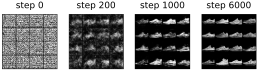
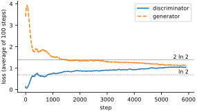
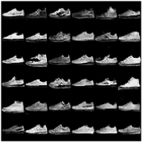
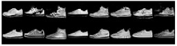
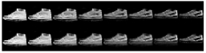
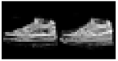

The autoencoder of the last chapter could rebuild a sneaker from 32 numbers, but it was never trained to invent one, and random codes came out as blurry, muddled garments. In 2014 Ian Goodfellow and his colleagues proposed a way to train a network whose whole job is to turn random numbers into realistic images. The idea is a contest. A generator network makes fake images from random noise. A discriminator network looks at an image and tries to say whether it is real, from the training set, or fake, from the generator. Each is trained to beat the other. The discriminator learns to spot fakes; the generator learns from the discriminator’s verdicts how to make better ones. This is a generative adversarial network, or GAN.
A familiar analogy is a counterfeiter and a detective. Neither starts out any good. But every time the detective learns a new way to spot a forgery, the counterfeiter learns to fix that flaw, and the contest pushes both to get better.
One kind of thing
GANs are easiest to train on a narrow kind of image, so we take only the sneakers from Fashion-MNIST, class number 7. The generator will end with a tanh, whose outputs lie between and 1, so we rescale the real images to that range as well. We also load the test set’s sneakers, which the GAN never trains on; they come out only at the end, to check whether the generator is copying its training images.
import torch
import torch.nn.functional as F
from torchvision.datasets import FashionMNIST
torch.manual_seed(0)
device = ('cuda' if torch.cuda.is_available()
else 'mps' if torch.backends.mps.is_available() else 'cpu')
def load(train): # sneakers only, pixels in -1..1
ds = FashionMNIST('data', train=train, download=True)
X = ds.data[ds.targets == 7][:, None].float() / 255.0
return (X * 2 - 1).to(device)
X = load(train=True)
X_test = load(train=False) # only for a check at the very end
print(FashionMNIST.classes[7], X.shape, X_test.shape)
print(X.min().item(), X.max().item())
def get_batch(batch_size):
return X[torch.randint(len(X), (batch_size,), device=device)]Sneaker torch.Size([6000, 1, 28, 28]) torch.Size([1000, 1, 28, 28]) -1.0 1.0
The two players
The two networks mirror each other. The discriminator is a small CNN, two stride-2 convolutions and a linear layer, ending in a sigmoid that gives the probability that its input is real. The generator is the decoder of the last chapter: a linear layer, then two transposed convolutions growing to . Its input is a latent vector of 64 random numbers.
The weight helpers conv, conv_t and linear, and the montage_plot helper, are the ones from Chapter 18. (This conv makes weights; it is not the hand-written convolution of Chapter 13.) Here get_batch needs only a batch size, because there are no labels. The two networks are called D and G; single capital letters break this book’s habit of lowercase function names, but they are what every GAN paper and program calls them.
latent_size = 64
d = [conv(1, 64), # discriminator: 28 -> 14
conv(64, 128), # 14 -> 7
linear(128 * 7 * 7, 1)] # 6272 -> 1 score
g = [linear(latent_size, 128 * 7 * 7), # generator: 64 -> 6272
conv_t(128, 64), # 7 -> 14
conv_t(64, 1)] # 14 -> 28def D(x, d):
x = F.leaky_relu(F.conv2d(x, d[0], stride=2, padding=1), 0.2)
x = F.leaky_relu(F.conv2d(x, d[1], stride=2, padding=1), 0.2)
return torch.sigmoid(F.linear(x.flatten(start_dim=1), d[2]))
def G(z, g):
x = F.relu(F.linear(z, g[0])).reshape(-1, 128, 7, 7)
x = F.relu(F.conv_transpose2d(x, g[1], stride=2, padding=1))
return torch.tanh(F.conv_transpose2d(x, g[2], stride=2, padding=1))
z = torch.randn(5, latent_size, device=device)
print(G(z, g).shape, D(G(z, g), d).shape)torch.Size([5, 1, 28, 28]) torch.Size([5, 1])
The quarter in conv_t’s fan-in matters more here than it did for the autoencoder. When we tried this generator with the fan-in of an ordinary convolution, which makes its starting weights half as large, its hidden units all switched off within a few hundred steps, its output went to a flat gray, and it never recovered.
The discriminator uses a leaky ReLU, which lets a small fraction (here 0.2) of each negative value through instead of zeroing it. The generator learns entirely from the gradients that flow back through the discriminator, and a plain ReLU blocks the gradient wherever its input is negative. The leak keeps information flowing.
The contest
Each player has its own optimizer, and each will update only its own weights. The learning rate and the betas setting of Adam are values that experience has shown to work well for GANs; we also fix 16 latent vectors so that we can watch the same 16 fakes improve over time.
batch_size = 64
real = torch.ones(batch_size, 1, device=device) # target: "real"
fake = torch.zeros(batch_size, 1, device=device) # target: "fake"
d_optimizer = torch.optim.Adam(d, lr=0.0002, betas=(0.5, 0.999))
g_optimizer = torch.optim.Adam(g, lr=0.0002, betas=(0.5, 0.999))
fixed_z = torch.randn(16, latent_size, device=device) # to watch progressEvery training step has two halves:
The discriminator’s turn. Show it a batch of real sneakers, with target 1, and a batch of fakes, with target 0. The loss is binary cross-entropy, the two-class version of the cross-entropy from Chapter 11. The fakes are
detach()ed: in this half, only the discriminator learns.The generator’s turn. Make a fresh batch of fakes and pass them to the discriminator, but this time with target 1, “real.” The loss is large when the discriminator sees through the fakes, and its gradient flows back through the discriminator into the generator, telling each generator weight how to change to make the fakes more convincing. Only the generator’s optimizer steps.
The target in the second half deserves a closer look. The contest, as Goodfellow first wrote it down, has the generator minimize the discriminator’s loss on fakes: make as small as possible. But early in training the fakes are terrible, the discriminator rejects them with confidence, is close to 0, and that expression is nearly flat there. Its gradient is tiny exactly when the generator most needs to learn. Training with target “real” instead means minimizing , which is steep when is near 0. Both losses reward the same thing, fakes that the discriminator believes, but this non-saturating version, which Goodfellow’s paper itself recommends, gives the generator a strong signal from the start.
One practical note: applying a sigmoid and then taking a logarithm, as F.binary_cross_entropy does, can lose precision when the discriminator is very sure. F.binary_cross_entropy_with_logits takes the raw score before the sigmoid and combines the two steps in a numerically safer way. Larger projects use it, with the sigmoid removed from D. We keep the sigmoid so that D’s output reads as a probability.
history, snapshots = [], {}
for step in range(6001):
# 1. Teach the discriminator: real images -> 1, generated -> 0
images = get_batch(batch_size)
z = torch.randn(batch_size, latent_size, device=device)
fakes = G(z, g).detach() # don't update G in this step
d_loss = (F.binary_cross_entropy(D(images, d), real)
+ F.binary_cross_entropy(D(fakes, d), fake))
d_optimizer.zero_grad()
d_loss.backward()
d_optimizer.step()
# 2. Teach the generator: make D say "real" for generated images
z = torch.randn(batch_size, latent_size, device=device)
g_loss = F.binary_cross_entropy(D(G(z, g), d), real)
g_optimizer.zero_grad()
g_loss.backward()
g_optimizer.step()
history.append((d_loss.item(), g_loss.item()))
if step in (0, 200, 1000, 6000):
with torch.no_grad():
snapshots[step] = G(fixed_z, g)[:, 0].cpu().numpy()
if step % 1000 == 0:
print(step, round(d_loss.item(), 3), round(g_loss.item(), 3))0 1.829 0.682 1000 0.65 1.536 2000 0.946 1.935 3000 0.903 1.369 4000 0.911 1.309 5000 1.099 0.918 6000 1.164 0.969
Watching it learn
Figure 19.1 shows the 16 fixed latent vectors turned into images at four moments during training.
plt.figure(figsize=(4.6, 1.4))
for i, (step, images) in enumerate(snapshots.items()):
plt.subplot(1, 4, i + 1)
plt.imshow(montage(images, padding_width=1, fill=-1),
cmap='gray', vmin=-1, vmax=1)
plt.title(f'step {step}')
plt.axis('off')
plt.show()
At step 0 the generator produces static. By step 200 the images have gone mostly dark, with faint streaky texture, because the discriminator’s first easy lesson was that real images are mostly black. By step 1,000 they are recognizably sneakers, if ragged, and by step 6,000 they have cleaner outlines, soles and light and dark panels. Nothing in the generator’s training ever showed it a real sneaker. Everything it knows came secondhand, through the discriminator’s judgments.
The losses tell a story of their own (Figure 19.2):
d_hist, g_hist = np.array(history).T
print('discriminator:', round(d_hist[3000:].mean(), 2),
' at chance:', round(2 * np.log(2), 2))
print('generator: ', round(g_hist[3000:].mean(), 2),
' at chance:', round(np.log(2), 2))
def smooth(h, n=100): # moving average of n steps
return np.convolve(h, np.ones(n) / n, mode='valid')
plt.figure(figsize=(4.6, 2.4))
plt.plot(smooth(d_hist), 'C0-', label='discriminator')
plt.plot(smooth(g_hist), 'C1--', label='generator')
for y, style, text in [(2 * np.log(2), '-', '2 ln 2'),
(np.log(2), '--', 'ln 2')]:
plt.axhline(y, color='gray', linestyle=style, linewidth=0.6)
plt.text(len(history), y, text, ha='right', va='bottom')
plt.xlabel('step')
plt.ylabel('loss (average of 100 steps)')
plt.legend()
plt.show()discriminator: 0.98 at chance: 1.39 generator: 1.21 at chance: 0.69

Unlike every loss curve so far, these do not go to zero. If the generator were perfect, the discriminator could do no better than say 0.5 for every image. Its loss would then be on the real batch plus the same on the fake batch, , and the generator’s loss would be . Those are the gray lines. In the first few hundred steps the discriminator wins easily and the generator’s loss shoots up. After that the two curves drift slowly toward each other; over the second half of training the discriminator’s loss averages 0.98 and the generator’s 1.21. The discriminator still has the upper hand, but it is not running away with the contest. This is the best a GAN usually manages: not a minimum, not a settled equilibrium, but a balance that holds well enough for both players to keep learning. If one player gets too far ahead, the other stops learning, which is why GANs have a reputation for being temperamental to train.
New sneakers
Thirty-six brand new latent vectors, never seen before, give thirty-six new sneakers (Figure 19.3):
with torch.no_grad():
z = torch.randn(36, latent_size, device=device)
samples = G(z, g)
montage_plot(samples[:, 0].cpu().numpy(), size=3.2)
They vary the way real sneakers do: higher and lower, light and dark, plain and striped. Some are imperfect, smeared or lopsided. How convincing are they to the discriminator?
with torch.no_grad():
print('real, training:', round(D(X[:1000], d).mean().item(), 3))
print('real, test: ', round(D(X_test, d).mean().item(), 3))
print('fake: ', round(D(samples, d).mean().item(), 3))real, training: 0.694 real, test: 0.668 fake: 0.432
On average the discriminator gives the real sneakers it trained on a 69 percent chance of being real, real sneakers it has never seen 67 percent, and the generator’s sneakers 43 percent. (The test sneakers matter: a discriminator that had merely memorized its training images would rate new real ones low.) It can still tell them apart more often than not, but it is far from certain, and neither player has won outright.
New, or copied?
A generator that simply memorized a few training images and reproduced them would also fool a discriminator for a while. The generator never sees a training image directly, but it is worth checking. For 1,000 generated sneakers we find the closest of the 6,000 training sneakers, measuring distance as the straight-line distance between the two lists of 784 pixels (torch.cdist computes it for every pair at once). As a yardstick we do the same for the 1,000 real test sneakers, which the GAN never saw:
with torch.no_grad():
many = G(torch.randn(1000, latent_size, device=device), g)
dist = torch.cdist(many.flatten(1), X.flatten(1)) # (1000, 6000)
test = torch.cdist(X_test.flatten(1), X.flatten(1))
print('fakes: ', round(dist.min(dim=1).values.median().item(), 2))
print('real test:', round(test.min(dim=1).values.median().item(), 2))
nearest = X[dist[:8].argmin(dim=1)] # closest training images
pairs = torch.cat([many[:8], nearest])[:, 0].cpu().numpy()
montage_plot(pairs, grid_shape=(2, 8), size=4.6)fakes: 6.68 real test: 6.07

The median generated sneaker is 6.68 away from its nearest training image, slightly farther than the 6.07 of a real sneaker the GAN never saw. If it were copying, that number would be close to zero. In Figure 19.4 each fake resembles its nearest neighbor in overall shape, as any sneaker would, but differs in the details: the stripes, the shading, the height of the collar. This check has a blind spot, though. A GAN can fail in a subtler way, called mode collapse: the generator finds a few kinds of sneaker that fool the discriminator and makes only those, new in their details but far less varied than the real thing. Distance to the nearest training image would not notice; looking at many samples side by side, as in Figure 19.3, would.
Finally, since the generator turns any latent vector into a sneaker, we can walk in a straight line between two latent vectors, as we did with the autoencoder. We pick the two of our 36 samples whose images differ the most. To see what the walk adds, the second row blends the two end images’ pixels instead, in the same eight steps (Figure 19.5):
with torch.no_grad():
flat = samples.flatten(start_dim=1)
far = torch.cdist(flat, flat).argmax().item() # most different pair
a, b = z[far // len(z)], z[far % len(z)]
t = torch.linspace(0, 1, 8, device=device)[:, None]
walk = G((1 - t) * a + t * b, g) # blend the latent vectors
ends = G(torch.stack([a, b]), g)
t = t[:, :, None, None]
fade = (1 - t) * ends[0] + t * ends[1] # blend the pixels
both = torch.cat([walk, fade])[:, 0].cpu().numpy()
montage_plot(both, grid_shape=(2, 8), size=4.6)
Both rows start and end at the same images, a light high-top and a dark low sneaker with a bright stripe, and at this size they look alike at first glance. Look closely at the middle frames, enlarged side by side (Figure 19.6):
middle = [both[3], both[8 + 3]] # frame 4 of each row
montage_plot(middle, grid_shape=(1, 2), size=2.6)
The pixel blend is a double exposure: the faded outline of the high-top, collar and all, shows through underneath the dark sneaker, along with a faint second sole. The latent walk instead gives one sneaker in every frame, whose collar lowers and whose color darkens step by step. The difference is the one we saw with the autoencoder: blending pixels mixes two pictures, while moving through the latent space changes the object.
The generator was trained on nothing but random latent vectors drawn by torch.randn, so every region of its latent space that torch.randn is likely to reach was visited in training and judged by the discriminator. That is why a random latent vector gives a sneaker here, while a random code given to the autoencoder’s decoder gave a blurry mixture.
The images here are tiny, but the core idea is the one behind the image generators you may have used: a network that maps random numbers to pixels. Most of today’s systems are trained differently. They are diffusion models, which learn to remove noise from an image a little at a time, rather than to fool a discriminator. They are also vastly bigger. But they are built from the same parts you have now seen in action: weighted sums, nonlinearities, latent spaces and gradient descent.